Simulate with complex geometries and complex physics
SimplifiedFastUpwindTerms
Simplified, fast way of computing upwind terms
The upwind scheme of section ClassicalUpwindTerms has a major drawback: the evaluation of physical quantities at the locations 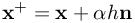 and 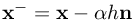. Depending on the upwind direction , these locations might be outside of the flow domain. The idea of the simplified scheme is to approximate the upwind values by first order Tylor series expansion.
![\begin{array}{l}
\tilde \nabla \bar p = \tilde \nabla p - \tilde \nabla \left( {\rho cL} \right)\left( {n_x^2u_{\tilde x}^{} + n_y^2v_{\tilde y}^{} + n_z^2w_{\tilde z}^{}} \right) - \left( {\rho cL} \right)\left( {n_x^2\left( {\begin{array}{*{20}{c}}
{u_{\tilde x\tilde x}^{}}\\
{u_{\tilde x\tilde y}^{}}\\
{u_{\tilde x\tilde z}^{}}
\end{array}} \right) + n_y^2\left( {\begin{array}{*{20}{c}}
{v_{\tilde y\tilde x}^{}}\\
{v_{\tilde y\tilde y}^{}}\\
{v_{\tilde y\tilde z}^{}}
\end{array}} \right) + n_z^2\left( {\begin{array}{*{20}{c}}
{w_{\tilde z\tilde x}^{}}\\
{w_{\tilde z\tilde y}^{}}\\
{w_{\tilde z\tilde z}^{}}
\end{array}} \right)} \right)\\
\tilde \nabla _{}^T{\mathbf{\bar v}} = \tilde \nabla _{}^T{\mathbf{v}} - \tilde \nabla _{}^T\left( {\frac{L}{{\rho c}}\tilde \nabla p} \right)
\end{array}](6da6e5031fe62ad391840501560dee9c.png) The even more simplified, fast upwind scheme comes now. In the equations above, the pressure formulation is difficult. However, one could further simplify
The even more simplified, fast upwind scheme comes now. In the equations above, the pressure formulation is difficult. However, one could further simplify
![\begin{array}{l}
\tilde \nabla \bar p = \tilde \nabla p - \tilde \nabla \left( {q\left( {\tilde \nabla _{}^T{\mathbf{v}}} \right)} \right) = \tilde \nabla p - \tilde \nabla _{}^T\left( {q\left( {\tilde \nabla {\mathbf{v}}} \right)} \right) - \tilde \nabla \times \left( {q\left( {\tilde \nabla \times {\mathbf{v}}} \right)} \right) - \left( {\begin{array}{*{20}{c}}
{q_x^{}v_y^{} - q_y^{}v_x^{} + q_x^{}w_z^{} - q_z^{}w_x^{}}\\
{q_y^{}u_x^{} - q_x^{}u_y^{} + q_y^{}w_z^{} - q_z^{}w_y^{}}\\
{q_z^{}u_x^{} - q_x^{}u_z^{} + q_z^{}v_y^{} - q_y^{}v_z^{}}
\end{array}} \right)\\
\tilde \nabla _{}^T{\mathbf{\bar v}} = \tilde \nabla _{}^T{\mathbf{v}} - \tilde \nabla _{}^T\left( {\frac{L}{{\rho c}}\tilde \nabla p} \right)
\end{array}](9a9d74ed830e375b0e56cef2d748c2bb.png) where 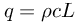 is simply a shortcut for more compact writing.
With this scheme we are able to prove/show the existence of mathematical damping in the upwind schemes. It is obvious that with the terms 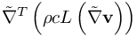 and 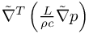 we have mathematical damping for velocity and pressure, which act as stabilization of the scheme.
where 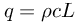 is simply a shortcut for more compact writing.
With this scheme we are able to prove/show the existence of mathematical damping in the upwind schemes. It is obvious that with the terms 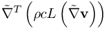 and 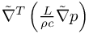 we have mathematical damping for velocity and pressure, which act as stabilization of the scheme.
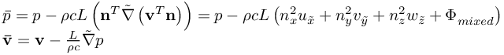
where - 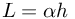 is the upwind step size,
- 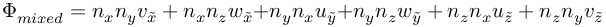 are mixed terms we assume to be of minor importance and therefore neglect them.
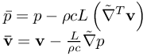
With this we are on the safe side, the damping can only be bigger (never smaller!) than the one of the original equations on top of this page, never bigger.
The derivatives of the upwind quantities are now